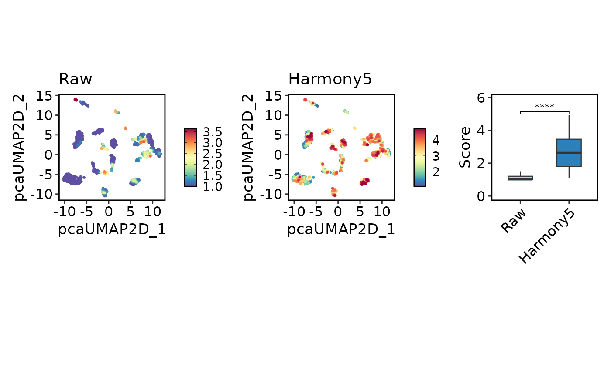

Compute per-cell Local Inverse Simpson's Index (LISI) scores from a
dimensional reduction and store them in the meta.data and tools slots
of a Seurat object.
Usage
RunLISI(
srt,
reductions = NULL,
reduction = NULL,
dims = NULL,
label_colnames = NULL,
prefix = NULL,
tool_name = NULL,
perplexity = 30,
nn_method = c("auto", "exact"),
tol = 1e-05,
max_iter = 50,
overwrite = TRUE,
verbose = TRUE
)Arguments
- srt
A
Seuratobject.- reductions
Character vector of dimensional reductions used to compute LISI. If
NULL,DefaultReduction()is used.- reduction
Deprecated alias of
reductions.- dims
Dimensions to use from the reduction. Default is
NULL, which uses all available dimensions.- label_colnames
Character vector of metadata columns used for LISI. If
NULL,RunLISI()will try to usesrt@misc[["integration_batch"]].- prefix
Prefix used for the stored LISI metadata columns. If
NULL, the reduction names are used.- tool_name
Name used to store detailed results in
srt@tools. Default is"LISI"when multiple reductions are provided, otherwisepaste0(prefix, "_LISI").- perplexity
Effective neighborhood size. Default is
30.- nn_method
Nearest-neighbor backend. One of
"auto"or"exact". Default is"auto", which uses the exact C++ backend fromthisutils. Requires the acceleratedthisutils::compute_lisi()interface that exposesnn_method = c("auto", "exact").- tol
Tolerance used in the binary search for the target perplexity. Default is
1e-5.- max_iter
Maximum number of binary-search iterations. Default is
50.- overwrite
Whether to overwrite existing metadata columns. Default is
TRUE.- verbose
Whether to print the message. Default is
TRUE.
Examples
data(panc8_sub)
panc8_sub <- integration_scop(
panc8_sub,
batch = "tech",
integration_method = "Harmony5"
)
#> ◌ [2026-05-12 15:47:58] Run integration workflow...
#> Warning: No layers found matching search pattern provided
#> ℹ [2026-05-12 15:47:59] Perform `Seurat::NormalizeData()` on split layers for Seurat v5 integration
#> ℹ [2026-05-12 15:48:01] Perform `Seurat::FindVariableFeatures()` per batch (`HVF_source = 'separate'`)
#> ℹ [2026-05-12 15:48:03] Number of available HVF: 2000
#> Warning: Layer ‘scale.data’ is empty
#> ℹ [2026-05-12 15:48:04] Perform `Seurat::ScaleData()` on split layers for Seurat v5 integration
#> ℹ [2026-05-12 15:48:05] Perform PCA on split layers before `Seurat::IntegrateLayers()`
#> ℹ [2026-05-12 15:48:05] Perform Seurat v5 integration with `HarmonyIntegration()`
#> The `features` argument is ignored by `HarmonyIntegration`.
#> This message is displayed once per session.
#> ℹ [2026-05-12 15:48:08] Estimated dimensions 1:20 for Harmony5
#> ℹ [2026-05-12 15:48:08] Adjust neighbor k from 20 to 20 for small-sample clustering
#> ℹ [2026-05-12 15:48:09] Perform `Seurat::FindClusters()` with "louvain"
#> ℹ [2026-05-12 15:48:09] Reorder clusters...
#> ℹ [2026-05-12 15:48:09] Skip `log1p()` because `layer = data` is not "counts"
#> ℹ [2026-05-12 15:48:09] Perform umap nonlinear dimension reduction using Harmony5 (1:20)
#> ℹ [2026-05-12 15:48:16] Perform umap nonlinear dimension reduction using Harmony5 (1:20)
#> ℹ [2026-05-12 15:48:23] Perform umap nonlinear dimension reduction using pca (1:20)
#> ✔ [2026-05-12 15:48:30] Harmony5 integration completed
names(panc8_sub@reductions)
#> [1] "pca" "Harmony5" "Harmony5UMAP2D" "Harmony5UMAP3D"
#> [5] "pcaUMAP2D"
panc8_sub <- RunLISI(
panc8_sub,
reductions = c("pcaUMAP2D", "Harmony5UMAP2D")
)
#> ℹ [2026-05-12 15:48:30] Compute LISI scores from reduction "pcaUMAP2D"
#> ℹ [2026-05-12 15:48:30] Compute LISI scores from reduction "Harmony5UMAP2D"
#> ✔ [2026-05-12 15:48:30] Stored LISI scores in metadata: "pcaUMAP2D_tech_LISI" and "Harmony5UMAP2D_tech_LISI"
LISIPlot(
panc8_sub,
combine = TRUE
)
